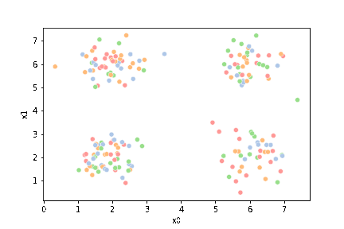
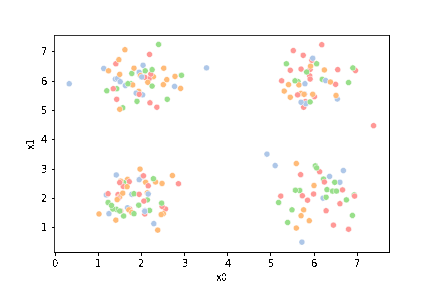
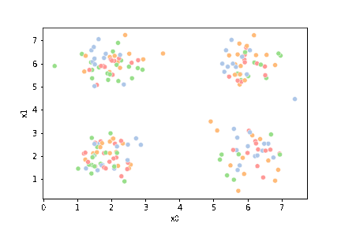

13. Clustering#
Clustering is unsupervised learning. That means we do not have the labels to learn from. We aim to learn both the labels for each point and some way of characterizing the classes at the same time.
Computationally, this is a harder problem. Mathematically, we can typically solve problems when we have a number of equations equal to or greater than the number of unknowns. For \(N\) data points ind \(d\) dimensions and \(K\) clusters, we have \(N\) equations and \(N + K*d\) unknowns. This means we have a harder problem to solve.
For today, we’ll see K-means clustering which is defined by \(K\) a number of clusters and a mean (center) for each one. There are other K-centers algorithms for other types of centers.
Clustering is a stochastic (random) algorithm, so it can be a little harder to debug the models and measure performance. For this reason, we are going to lootk a little more closely at what it actually does than we did with classification.
import matplotlib.pyplot as plt
import numpy as np
import itertools
import seaborn as sns
import pandas as pd
from sklearn import datasets
from sklearn.cluster import KMeans
from sklearn import metrics
import string
import itertools as it
13.1. How does Kmeans work?#
We will start with some synthetics data and then see how the clustering works.
# -------- Set paramters, change these to adjust the sample
# number of classes (groups)
C = 4
# number of dimensions of the features
D=2
# number of samples
N = 200
# minimum of the means
offset = 2
# distance between means
spacing = 2
# set the variance of the blobs
var = .25
# ------- Get the class labels
# choose the first C uppcase letters using the builtin string class
classes = list(string.ascii_uppercase[:C])
# ------- Pick some means
# get the number of grid locations needed
G = int(np.ceil(np.sqrt(C)))
# get the locations for each axis
grid_locs = a = np.linspace(offset,offset+G*spacing,G)
# compute grid (i,j) for each combination of values above & keep C values
means = [(i,j) for i, j in it.product(grid_locs,grid_locs)][:C]
# store in dictionary with class labels
mu = {c: i for c, i in zip(classes,means)}
# ------- Sample the data
#randomly choose a class for each point, with equal probability
clusters_true = np.random.choice(classes,N)
# draw a random point according to the means from above for each point
data = [np.random.multivariate_normal(mu[c], var*np.eye(D)) for c in clusters_true]
# ------- Store in a dataframe
# rounding to make display neater later
df = pd.DataFrame(data = data,columns = ['x' + str(i) for i in range(D)]).round(2)
# add true cluster
df['true_cluster'] = clusters_true
This gives us a small dataframe with 2 featurs (D=2) and four custers (C=4).
df.head()
| x0 | x1 | true_cluster | |
|---|---|---|---|
| 0 | 6.49 | 1.65 | C |
| 1 | 5.40 | 2.52 | C |
| 2 | 6.25 | 1.59 | C |
| 3 | 5.80 | 2.41 | C |
| 4 | 6.04 | 5.66 | D |
We can see the data with the labels
sns.pairplot(data=df, hue='true_cluster')
<seaborn.axisgrid.PairGrid at 0x7f4fb022ea60>

this is what the clustering algorithm wil see.
sns.pairplot(data=df)
<seaborn.axisgrid.PairGrid at 0x7f4fabc26910>

13.2. Kmeans#
First we will make a variable that we can use to pick out the feature columns
data_cols = ['x0','x1']
Next, we’ll pick 4 random points to be the starting points as the means.
K =4
mu_0 = df[data_cols].sample(n=K).values
mu_0
array([[2.11, 6.24],
[5.46, 6.35],
[5.45, 1.97],
[1.59, 5.15]])
Note
I changed this to mu_0 while I was fixing the loop below to be more explicit instead of overwriting it.
i = 0
Here, we’ll set up some helper code.
def mu_to_df(mu,i):
mu_df = pd.DataFrame(mu,columns=['x0','x1'])
mu_df['iteration'] = str(i)
mu_df['class'] = ['M'+str(i) for i in range(K)]
mu_df['type'] = 'mu'
return mu_df
cmap_pt = sns.color_palette('tab20',8)[1::2]
cmap_mu = sns.color_palette('tab20',8)[0::2]
You can see that this whole color pallete is paired colors, and what the cmap_pt and cmap_mu do is take odd and even subsets of the palette into two separate
sns.color_palette('tab20',8)
Now, we will compute, fo each sample which of those four points it is closest to first by taking the difference, squaring it, then summing along each row.
[((df[data_cols]-mu_i)**2).sum(axis=1) for mu_i in mu_0]
[0 40.2525
1 24.6625
2 38.7621
3 28.2850
4 15.7813
...
195 36.6785
196 14.2052
197 23.4832
198 0.0685
199 23.2349
Length: 200, dtype: float64,
0 23.1509
1 14.6725
2 23.2817
3 15.6392
4 0.8125
...
195 24.3153
196 0.3050
197 34.1746
198 9.9905
199 28.3345
Length: 200, dtype: float64,
0 1.1840
1 0.3050
2 0.7844
3 0.3161
4 13.9642
...
195 0.4072
196 16.2565
197 9.9349
198 29.7250
199 5.3378
Length: 200, dtype: float64,
0 36.2600
1 21.4330
2 34.3892
3 25.2317
4 20.0626
...
195 31.4784
196 19.0073
197 14.6401
198 2.1170
199 15.5602
Length: 200, dtype: float64]
This gives us a list of 4 data DataFrames, one for each mean (mu), with one row for each point in the dataset with the distance from that point to the corresponding mean. We can stack these into one DataFrame.
pd.concat([((df[data_cols]-mu_i)**2).sum(axis=1) for mu_i in mu_0],axis=1).head()
| 0 | 1 | 2 | 3 | |
|---|---|---|---|---|
| 0 | 40.2525 | 23.1509 | 1.1840 | 36.2600 |
| 1 | 24.6625 | 14.6725 | 0.3050 | 21.4330 |
| 2 | 38.7621 | 23.2817 | 0.7844 | 34.3892 |
| 3 | 28.2850 | 15.6392 | 0.3161 | 25.2317 |
| 4 | 15.7813 | 0.8125 | 13.9642 | 20.0626 |
Now we have one row per sample and one column per mean, with with the distance from that point to the mean. What we want is to calculate the assignment, which
mean is closest, for each point. Using idxmin with axis=1 we take the
minimum across each row and returns the index (location) of that minimum.
pd.concat([((df[data_cols]-mu_i)**2).sum(axis=1) for mu_i in mu_0],axis=1).idxmin(axis=1)
0 2
1 2
2 2
3 2
4 1
..
195 2
196 1
197 2
198 0
199 2
Length: 200, dtype: int64
We’ll save all of this in a column named '0'. Since it is our 0th iteration.
This is called the assignment step.
df[str(i)] = pd.concat([((df[data_cols]-mu_i)**2).sum(axis=1) for mu_i in mu_0],axis=1).idxmin(axis=1)
df.head()
| x0 | x1 | true_cluster | 0 | |
|---|---|---|---|---|
| 0 | 6.49 | 1.65 | C | 2 |
| 1 | 5.40 | 2.52 | C | 2 |
| 2 | 6.25 | 1.59 | C | 2 |
| 3 | 5.80 | 2.41 | C | 2 |
| 4 | 6.04 | 5.66 | D | 1 |
Now we can plot the data, save the axis, and plot the means on top of that.
Seaborn plotting functions return an axis, by saving that to a variable, we
can pass it to the ax parameter of another plotting function so that both
plotting functions go on the same figure.
sfig = sns.scatterplot(data =df,x='x0',y='x1',hue='0',palette=cmap_pt,legend=False)
# plt.plot(mu[:,0],mu[:,1],marker='s',linewidth=0)
mu_df = mu_to_df(mu_0,i)
sns.scatterplot(data =mu_df,x='x0',y='x1',hue='class',palette=cmap_mu,ax=sfig,legend=False)
# sfig.get_figure().savefig('kmeans01.png')
<Axes: xlabel='x0', ylabel='x1'>

We see that each point is assigned to the lighter shade of its matching mean. These points are the one that is closest to each point, but they’re not the centers of the point clouds. Now, we can compute new means of the points assigned to each cluster, using groupby.
mu_1 = df.groupby('0')[data_cols].mean().values
We can plot these again, the same data, but with the new means.
fig = plt.figure()
mu_df = mu_to_df(mu_1,1)
sfig = sns.scatterplot(data =df,x='x0',y='x1',hue='0',palette=cmap_pt,legend=False)
sns.scatterplot(data =mu_df,x='x0',y='x1',hue='class',palette=cmap_mu,ax=sfig,legend=False)
<Axes: xlabel='x0', ylabel='x1'>

We see that now the means are in the center of each cluster, but that there are now points in one color that are assigned to other clusters.
So, again we can update the assignments.
i=1 #increment
df[str(i)] = pd.concat([((df[data_cols]-mu_i)**2).sum(axis=1) for mu_i in mu_1],axis=1).idxmin(axis=1)
df.head()
| x0 | x1 | true_cluster | 0 | 1 | |
|---|---|---|---|---|---|
| 0 | 6.49 | 1.65 | C | 2 | 2 |
| 1 | 5.40 | 2.52 | C | 2 | 2 |
| 2 | 6.25 | 1.59 | C | 2 | 2 |
| 3 | 5.80 | 2.41 | C | 2 | 2 |
| 4 | 6.04 | 5.66 | D | 1 | 1 |
And plot again.
sfig = sns.scatterplot(data =df,x='x0',y='x1',hue=str(i),palette=cmap_pt,legend=False)
# plt.plot(mu[:,0],mu[:,1],marker='s',linewidth=0)
mu_df = mu_to_df(mu_1,i)
sns.scatterplot(data =mu_df,x='x0',y='x1',hue='class',palette=cmap_mu,ax=sfig,legend=False)
<Axes: xlabel='x0', ylabel='x1'>

If we keep going back and forth like this, eventually, the assignment step will not change any assignments. We call this condition convergence. We can implement the algorithm with a while loop.
Correction
In the following I swapped the order of the mean update and assignment steps.
My previous version had a different initialization (the above part) so it
was okay for the steps to be in the other order.
mu_list = [mu_to_df(mu_0,0),mu_to_df(mu_1,1)]
cur_old = str(i-1)
cur_new = str(i)
mu = mu_1
while sum(df[cur_old] !=df[cur_new]) >0:
cur_old = cur_new
i +=1
cur_new = str(i)
print(cur_new)
# update the means and plot with current generating assignments
mu = df.groupby(cur_old)[data_cols].mean().values
mu_df = mu_to_df(mu,i)
mu_list.append(mu_df)
fig = plt.figure()
# plot with old assignments
sfig = sns.scatterplot(data =df,x='x0',y='x1',hue=cur_old,palette=cmap_pt,legend=False)
sns.scatterplot(data =mu_df,x='x0',y='x1',hue='class',palette=cmap_mu,ax=sfig,legend=False)
file_num = str(i*2 -1).zfill(2)
sfig.get_figure().savefig('kmeans' +file_num + '.png')
# update the assigments and plot with the associated means
df[cur_new] = pd.concat([((df[data_cols]-mu_i)**2).sum(axis=1) for mu_i in mu],axis=1).idxmin(axis=1)
fig = plt.figure()
sfig = sns.scatterplot(data =df,x='x0',y='x1',hue=cur_new,palette=cmap_pt,legend=False)
sns.scatterplot(data =mu_df,x='x0',y='x1',hue='class',palette=cmap_mu,ax=sfig,legend=False)
# plt.plot(mu[:,0],mu[:,1],marker='s',linewidth=0)
# we are making 2 images per iteration
file_num = str(i*2).zfill(2)
sfig.get_figure().savefig('kmeans' +file_num + '.png')
2
3


This algorithm is random. So each time we run it, it looks a little different.
The savefig step allows me to save the separate images and then I converted them into gifs. I have saved some from today as well as some past ones.




df_vis = df.melt(id_vars = ['x0','x1'], var_name ='iteration',value_name='class')
df_vis.replace({'class':{i:c for i,c in enumerate(string.ascii_uppercase[:C])}},inplace=True)
df_vis['type'] = 'pt'
df_mu_vis = pd.concat([pd.concat(mu_list),df_vis])
cmap = sns.color_palette('tab20',8)
n_iter = i
sfig = sns.relplot(data=df_mu_vis,x='x0',y='x1',hue='class',col='iteration',
col_wrap=3,hue_order = ['M0','A','M1','B','M2','C','M3','D'],
palette = cmap,size='type',col_order=[str(i) for i in range(n_iter+1)])

and another run I saved that has a lot of iterations:

13.3. Clustering with KMeans#
We can fit it with the fit method. We have to instantiate it with the number of clusters.
Splitting to test and train is not always necessary, beacuse we are not testing predictions.
kmeans = KMeans(n_clusters=4, random_state=0).fit(df[data_cols])
/opt/hostedtoolcache/Python/3.8.18/x64/lib/python3.8/site-packages/sklearn/cluster/_kmeans.py:1416: FutureWarning: The default value of `n_init` will change from 10 to 'auto' in 1.4. Set the value of `n_init` explicitly to suppress the warning
super()._check_params_vs_input(X, default_n_init=10)
Once it is fit the learned labels for each sample are saved.
kmeans.labels_
array([1, 1, 1, 1, 3, 1, 3, 0, 1, 0, 3, 3, 0, 0, 3, 0, 1, 1, 0, 3, 2, 1,
0, 3, 0, 1, 0, 3, 2, 3, 3, 0, 2, 0, 1, 2, 3, 1, 0, 3, 3, 2, 0, 0,
2, 0, 3, 2, 0, 1, 2, 3, 2, 0, 3, 1, 1, 1, 0, 2, 3, 1, 1, 3, 3, 3,
3, 3, 0, 1, 3, 3, 2, 3, 2, 0, 1, 2, 2, 0, 2, 2, 3, 3, 1, 3, 3, 0,
2, 3, 2, 1, 1, 0, 1, 1, 1, 2, 3, 2, 1, 0, 1, 0, 3, 2, 3, 1, 3, 0,
3, 3, 2, 2, 2, 1, 0, 0, 2, 0, 3, 3, 1, 2, 0, 3, 2, 0, 3, 3, 2, 2,
3, 3, 2, 3, 2, 3, 2, 3, 0, 2, 2, 1, 2, 1, 3, 2, 2, 2, 3, 0, 3, 3,
3, 2, 3, 1, 0, 2, 0, 0, 3, 1, 1, 1, 3, 0, 0, 2, 3, 1, 0, 3, 3, 3,
0, 2, 0, 1, 2, 3, 0, 2, 2, 0, 1, 0, 0, 3, 2, 0, 2, 0, 1, 1, 3, 2,
0, 2], dtype=int32)
As are the cluster centers.
kmeans.cluster_centers_
array([[2.10916667, 6.04708333],
[5.98547619, 2.07952381],
[2.01571429, 2.03693878],
[5.9242623 , 6.01442623]])
In this toy dataset we can see that they match the true ones:
df.groupby('true_cluster')[data_cols].mean()
| x0 | x1 | |
|---|---|---|
| true_cluster | ||
| A | 2.015714 | 2.036939 |
| B | 2.109167 | 6.047083 |
| C | 5.985476 | 2.079524 |
| D | 5.924262 | 6.014426 |
However, note that they can be in different orders.
13.4. Questions#
13.4.1. what happens if we do not know how many clusters there are?#
There are some clustering algorithms that can also learn the number of clusters, for example the Dirichlet Process Gaussian Mixture Model.
Alternatively, you can try the algorithm with different numbers of clusters and evaluate to determine which one is the best fit.
13.4.2. what’s the difference between synthetic data and data from the gaussian machine learning model.#
They’re both Gaussian data. This data is actually a little bit simpler than the GNB data, because all of the variances are the same.
13.4.3. How helpful would clustering be over the previous classifiers if there are no discernible groups within 2D plots of the data?#
Clustering is for a case of a different goal. It is for when there are no labels, but you have reason to beleive that there are separate groups.
If the data has a even just 3 features it is possible that the clusters are not visible in 2D plots but exist and are findable with KMeans.
13.4.4. How do clustering algorithms relate the data to the desired output. is it pureley for humans to be able to understand what the data is or is there some deeper systems going on.#
Clustering can help you discover groups in the data even if they are not available in the real data. It is a way to discover something else that is going on that was not known in advance.
13.4.5. What are some more applications for clustering?#
Some example applications:
one of my lab mates in grad school, used unsupervised learning in collaboration with medical doctors to discover subtypes of COPD (Chronic Obstructive Pluminary Disorder).
Etsy Data Scientists used clustering to discover “styles” of products like geometric, farmhouse, goth, etc.
My Dissertation research was a different type of unsupervised learning but similar, to use brain imagaing data and discover what images different people in a study viewed which images as similar.
a data scientist at ESPN might think there are “types” of players in a sport, they could use data on the players to discover it
a data scientist at a retail company like Walmart or Target might think there are “types” of customers and what to discover them from the data on what people have purchased.
13.4.6. How can clustering benefit the analysis of data?#
It allows you to find groups in the data that is not an available column.